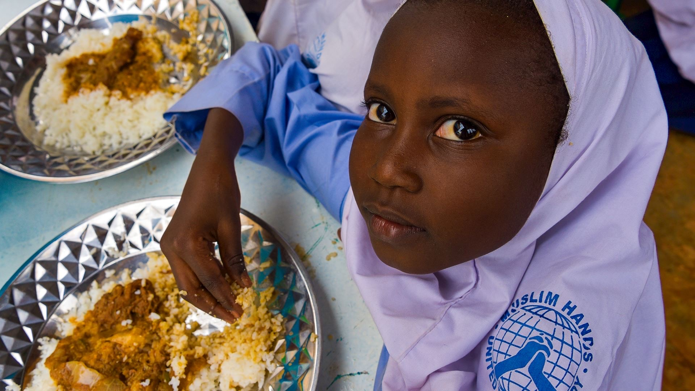

Trois headers, une photo et un titre court
Inspirés de la page d'accueil d'Islamic Relief Worldwide : une grande photo, un titre de trois à cinq mots, un seul appel au don. La proposition A est en place sur l'accueil.
A · Carrousel plein écran, titre centré (appliquée sur l'accueil)



Trois diapositives (Gaza, puits, hiver), défilement toutes les 7 secondes, flèches et points, pause au survol. Le titre mêle une graisse légère et une graisse forte, comme le « BE A LIFELINE » d'IRW.
B · Photo unique, titre à gauche (déclinée sur les pages intérieures)
Pas de carrousel : une seule photo forte, lue en moins de deux secondes. C'est le modèle appliqué aux 21 pages intérieures, avec un titre centré et la carte blanche de réassurance sous la photo.
C · Photo unique, carte de don flottante

La carte de don blanche : montant et fréquence visibles sans défiler, comme le bloc de don du site IRW. Le titre reste court, la photo occupe tout l'écran.